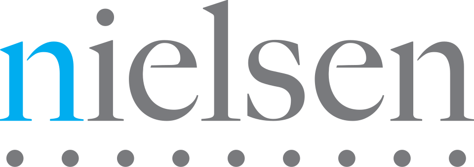

닐슨 Nielsen Company
닐슨(Nielsen Company)은 미국의 미디어 시청자 측정 기업이다. 100개 이상의 국가에서 사업을 하며, 소비자가 무엇을 시청하는지에 관한 데이터를 고객에게 제공한다.
최종 업데이트

닐슨은 어떤 브랜드인가
닐슨은 미디어 사업을 위한 글로벌 독립 측정·데이터 기업이다. 100개 이상의 국가에서 사업을 하며, 서비스는 전 세계 GDP와 인구의 90% 이상을 포괄한다.
고객에게 소비자가 시청하는 프로그램과 광고에 관한 데이터를 글로벌 및 지역 단위로 제공하고, 그 선택들이 서로 어떻게 맞물리는지도 보여준다. 닐슨 브랜드는 TV 시청률과 가장 흔히 연결되지만, TV 시청률 서비스는 회사 사업과 매출의 약 4분의 1을 차지한다.
2021년 NielsenIQ를 매각한 뒤 순수한 미디어 시청자 측정·분석 기업이 되었다. 전 세계에서 약 15,000명을 고용한다.
닐슨은 어떻게 시작되고 성장했나
닐슨은 1923년 Arthur C. Nielsen, Sr.가 설립했다.
그는 경쟁 판매 실적을 측정하는 방식을 고안해 '시장 점유율'을 실용적인 경영 도구로 만들었다. 오랫동안 회사는 TV 시청률을 맡은 Nielsen Media Research와 소비자 쇼핑 동향 및 박스오피스 데이터를 맡은 AC Nielsen이라는 두 자회사로 알려졌다.
지주회사는 네덜란드에 설립되었고 2006년 5월 24일 사모펀드 컨소시엄이 인수했다. 2011년 1월 기업공개를 하고 뉴욕증권거래소에서 'NLSN'이라는 종목 기호로 거래를 시작했다.
닐슨의 브랜드 아이덴티티는 무엇인가
TV 시청률로 널리 알려진 미디어 시청자 측정 기업으로, 소비자 데이터 사업인 NielsenIQ를 분리한 뒤 미디어 측정과 분석에 집중한다.
닐슨의 대표 제품과 서비스는 무엇인가
Nielsen Media Research는 이후 Global Media 부문으로, AC Nielsen은 Global Connect 부문으로 발전했다. Global Media는 TV 시청률을 비롯한 미디어 시청자 측정과 분석을 맡는다.
Global Connect는 NielsenIQ로 불렸으며 소비자 쇼핑 동향 분야를 다뤘다. 회사는 Global Media 부문을 유지하고 Global Connect 부문을 매각하기로 했다.
현재 닐슨은 소비자가 시청하는 프로그램과 광고에 관한 데이터를 글로벌 및 지역 단위로 고객에게 제공한다.
닐슨은 지금 어떤 상태인가
2015년 Nielsen N.V.가 Nielsen Holdings plc와 합병하면서 상장 지주회사의 설립지가 네덜란드에서 영국으로 바뀌었다. 2021년 3월 Global Connect(NielsenIQ)를 Advent International에 매각했다.
2022년 3월 Evergreen Coast Capital Corp.와 Brookfield Business Partners가 이끄는 투자자 그룹의 인수 제안을 수락했고, 거래는 2022년 10월 완료되었다. 2023년 9월 Karthik Rao가 CEO가 되었고 David Kenny는 Executive Chairman이 되었다.
닐슨 로고는 어떻게 변해왔나
자주 묻는 질문
닐슨는 어느 나라 브랜드인가요?
닐슨는 미국의 미디어·엔터테인먼트 브랜드입니다.
닐슨는 언제 설립되었나요?
닐슨는 1994년 설립되었습니다.
닐슨의 브랜드 아이덴티티는 무엇인가요?
TV 시청률로 널리 알려진 미디어 시청자 측정 기업으로, 소비자 데이터 사업인 NielsenIQ를 분리한 뒤 미디어 측정과 분석에 집중한다.
닐슨의 대표 제품은 무엇인가요?
Nielsen Media Research는 이후 Global Media 부문으로, AC Nielsen은 Global Connect 부문으로 발전했다.
닐슨는 어느 기업이 소유하고 있나요?
2015년 Nielsen N.V.가 Nielsen Holdings plc와 합병하면서 상장 지주회사의 설립지가 네덜란드에서 영국으로 바뀌었다.
닐슨의 창업자는 누구인가요?
닐슨의 창업자는 Arthur Nielsen입니다(위키데이터 기준).
닐슨의 본사는 어디에 있나요?
닐슨의 본사는 뉴욕에 있습니다(위키데이터 기준).
출처와 검증
닐슨 관련 참고: 공식 웹사이트 · 위키데이터 Q540891 · 한국어 위키백과 · 영어 위키백과. 브랜드명은 한글과 원어를 함께 표기하되 데이터에 없는 표기는 만들지 않습니다. 기원 국가·설립연도는 검수된 정의문에서 확인된 값을 우선하고, 없을 때만 공식 웹사이트 URL이 일치하는 위키데이터 개체의 값을 씁니다. 위키데이터 값은 2026-11-14 기준입니다.